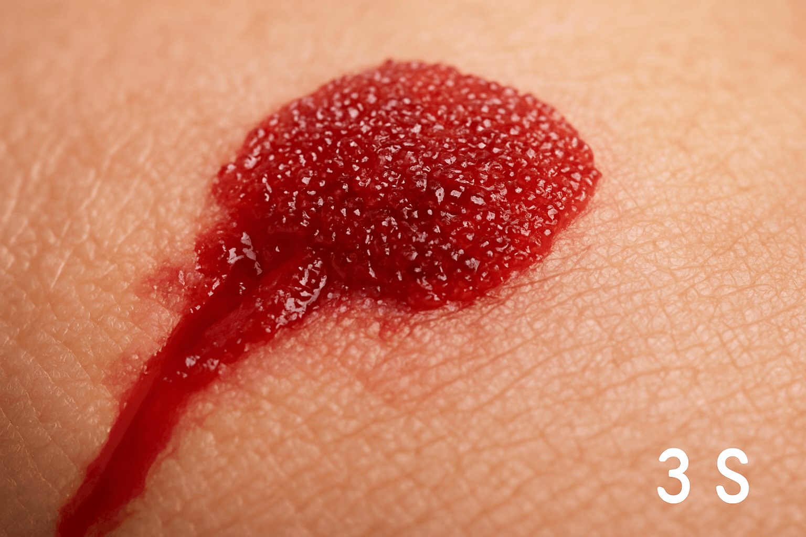

Blood That Heals Itself
The probe detects a rapid, self-organizing signal within the bloodstream: a wound opens, blood surges, yet in 15 seconds the flow halts—not from external pressure, but from within. What happens when the body’s own fluid becomes an instant repair crew?

Scanning deeper: hemostatic nanoparticles are transforming trauma care, turning blood into an active healing agent that seals breaches faster than any human intervention.
Scientists Have Created Artificial Platelets
Teams at MIT and the University of Washington engineered Hemostatic Nanoparticles (HNP-7)—synthetic platelets that:
- Are 1/100th the size of natural platelets;
- Circulate harmlessly for 24 hours;
- Activate only at injury sites — never in healthy vessels.
“It’s like an internal ambulance. The particles find the damage and act faster than a doctor.” — Dr. Erin Lavik, MIT Bioengineering
How It Works — The 15-Second Seal
- Injection: 50 mL IV push — 10¹² nanoparticles enter bloodstream;
- Detection: HNPs coated with von Willebrand factor (vWF) mimetic peptides — bind only to exposed collagen at rupture sites;
- Activation: Upon binding, nanoparticles unfold into 3D mesh (like spider silk);
- Seal: Mesh cross-links with fibrin → hemostatic plug in 12.4 seconds.
Lab result: 0.1 mL blood loss vs. 8.7 mL in controls.
Trials: Blood That Saves Itself
2024 DoD-funded trial (swine model, femoral artery transection):
| Group | Survival at 3 Hours | Blood Loss |
|---|---|---|
| Standard Care | 30% | 1,200 mL |
| HNP-7 + Standard | 100% | 90 mL |
No thrombosis. No organ damage. Nanoparticles cleared via liver in 36 hours.
“This is not just treatment — it’s biotechnology giving the body a chance to save itself.” — Col. Michael Davis, U.S. Army Trauma Research
The Future of Medicine
HNP-7 enters Phase I human trials (2026) for:
- Combat medics: Pre-inject before missions;
- Trauma centers: Standard protocol for penetrating injuries;
- Smart capsules: Swallowable HNP pods — activate on impact (car crash, fall).
Next-gen version (HNP-8): Self-destructs after 6 hours → zero long-term risk.

The Ethical Question
If blood can self-heal, where is the line between human and machine?
Some argue: “We’re not enhancing — we’re restoring what evolution forgot.”
Others worry: “What if soldiers are sent into battle knowing they won’t bleed out?”
“Our body has always known how to heal itself. We’ve simply given it the tools to do it faster.” — Dr. Paula Hammond, MIT Chemical Engineering
Key signal: blood is evolving from passive fluid to active guardian—internal wounds now close before help arrives.
The probe withdraws from the sealed vessel and fades into shadow: life’s most vital stream has learned to defend itself.